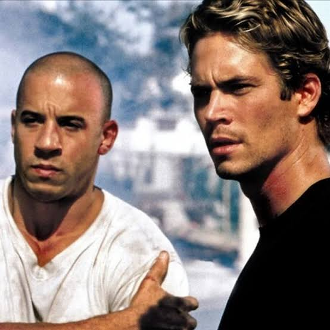
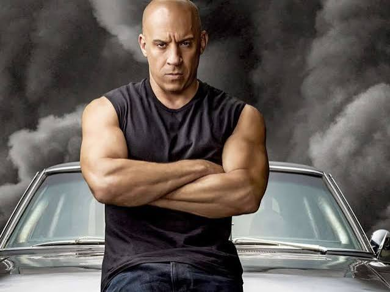

Sinopse

Lançado em 2001, Velozes e Furiosos (The Fast and the Furious) acompanha Brian O'Conner, um policial infiltrado que investiga roubos de caminhões no meio das corridas de rua de Los Angeles.
Ao se aproximar do piloto Dominic Toretto, Brian passa a viver um conflito: cumprir a missão ou proteger a amizade com a equipe. É daí que nasce a ideia de família, a marca do filme.
Eu vivo a minha vida um quarto de milha por vez.
Personagens

- Dominic Toretto (Vin Diesel): líder da equipe, piloto e mecânico.
- Brian O'Conner (Paul Walker): policial infiltrado que vira parte da família.
- Letty Ortiz (Michelle Rodriguez): pilota e parceira de Dom.
- Mia Toretto (Jordana Brewster): irmã de Dominic.
Carros
- Dodge Charger R/T 1970: o carro mais ligado a Dominic.
- Toyota Supra MK4: o carro laranja de Brian no primeiro filme.
Ficha técnica
| Título original | The Fast and the Furious |
|---|---|
| Título no Brasil | Velozes e Furiosos |
| Ano | 2001 |
| Direção | Rob Cohen |
| Gênero | Ação |
| País | Estados Unidos |
| Elenco principal | Vin Diesel, Paul Walker, Michelle Rodriguez e Jordana Brewster |